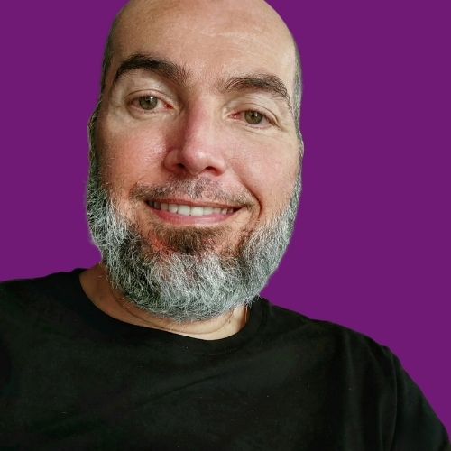

Palestrante
Talks provocativos que conectam vivência pessoal e rigor técnico para inspirar mudanças culturais.
UX Design Manager focado em IA e Acessibilidade, autor do livro "Desconstruindo o Capacitismo" e criador de experiências inclusivas.
Trabalho na intersecção entre inovação e inclusão para resolver barreiras de acesso que o mercado ignora.

Minha autoridade vem da prática. Sou pessoa com deficiência e lidero projetos de design e IA em contextos complexos. Atuei em empresas de tecnologia, cultura e serviços financeiros, coordenando equipes em ambientes de alta pressão como o Teleton.
Sou multipotencial por método: integro design, escrita, cultura e pesquisa para criar soluções que não cabem em uma única caixa, mas que geram resultado, impacto e clareza.
Talks provocativos que conectam vivência pessoal e rigor técnico para inspirar mudanças culturais.
Estratégia e desenho de experiências entre humanos e agentes de IA para produtos complexos.
Transformo a inclusão em estratégia de negócio, reduzindo riscos de marca e ampliando alcance.
Gestão de times de alta performance em ambientes de pressão, superando metas de impacto.
Conhecimento e ferramentas para a comunidade.
Newsletter sobre resistência anticapacitista, cultura e design radical.
Ler Manifesto → EnsaiosReflexões profundas sobre as interseções entre tecnologia, sociedade e a vivência trans/PcD.
Assinar Grátis → LinktreeAcesso centralizado ao meu portfólio, clipping de imprensa, kits de mídia e curadoria.
Acessar Tudo →Você já parou para pensar como palavras e atitudes aparentemente inofensivas podem construir barreiras invisíveis para milhões de pessoas?
O capacitismo está tão enraizado em nossa cultura que passa despercebido. "Desconstruindo o Capacitismo" é a ferramenta definitiva para quem deseja fazer parte dessa transformação. Uma obra prática para entender o impacto na saúde mental e adquirir ferramentas para ser um aliado eficaz.
Quer acelerar sua carreira em UX? Minha mentoria foca em Liderança, Design Inclusivo e IA. Transforme seu perfil técnico em uma força estratégica no mercado.
Não vendo "telas". Vendo mitigação de risco, inovação com IA e relevância cultural para o seu negócio.
Auditoria de barreiras invisíveis e implementação de agentes de IA que humanizam o atendimento. DesignOps estratégico para escalar sem quebrar processos.
Diagnóstico EmpresarialTire seu time do piloto automático. Provocações necessárias sobre Futuro do Trabalho e Anticapacitismo que geram desconforto produtivo e ação imediata.
Cotar para EventoTreinamento "mão na massa" para times de produto e cultura. Como aplicar WCAG e Inclusão no dia a dia sem travar o delivery da sprint.
Solicitar TemasNão é apenas teoria. É estratégia aplicada em interfaces reais e palcos globais.
Dúvidas sobre IA, Acessibilidade e Consultoria.
Utilizo Inteligência Artificial para identificar barreiras em larga escala e criar agentes que adaptam interfaces em tempo real. A IA não substitui o humano, ela potencializa a inclusão removendo o "trabalho braçal" da conformidade.
Meu foco é estratégia e arquitetura. Eu defino como o produto deve funcionar para ser inclusivo e eficiente. Posso orientar seu time de UI, mas meu valor está na inteligência do sistema, não apenas no pixel.
Minha mentoria é ideal para quem quer dar o próximo passo: designers plenos/sêniores querendo liderança, ou profissionais em transição que buscam diferencial em Acessibilidade e IA. Não ensino ferramentas básicas (Figma), ensino visão de mercado.
É uma inteligência treinada para entender contextos variados (gírias, sotaques, limitações motoras) e oferecer atendimento humano e preciso, sem os vieses comuns dos chatbots tradicionais.
A mudança começa na cultura. Minhas palestras focam em "desconforto produtivo": mostro onde a empresa perde dinheiro e talento ao excluir pessoas, transformando a inclusão em meta de negócio.
Sim. Acessibilidade é interseccional. Minha abordagem considera raça, gênero, idade e letramento digital. Um produto acessível para uma pessoa cega também é melhor para um idoso ou alguém com baixa conexão.
"Desconstruindo o Capacitismo" é um guia prático e humano para líderes, RHs e educadores. Não requer conhecimento técnico.
Sim, mas vou além do checklist. A auditoria técnica é o básico. Entrego um plano de ação para que o produto continue acessível após a auditoria, integrando isso ao fluxo de DevOps e DesignOps.
Podem ser presenciais ou remotas. Fujo do modelo "palestra motivacional". Trago dados, casos reais e provocações estratégicas para que a audiência saia com ferramentas para aplicar na segunda-feira.
Preencha o formulário e vamos desenhar o futuro.